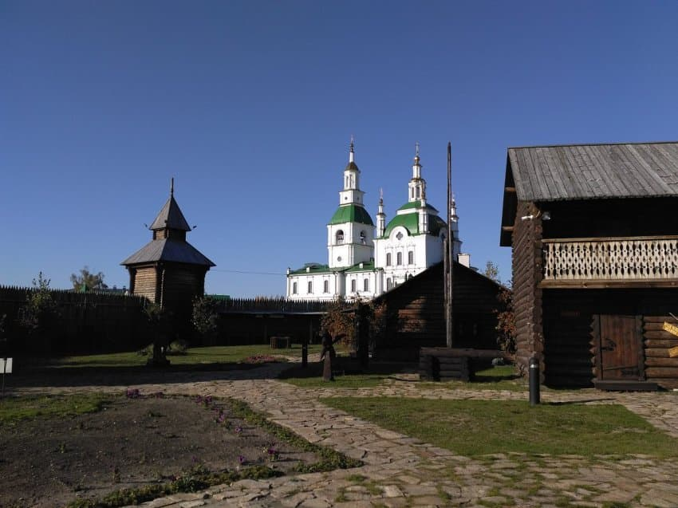
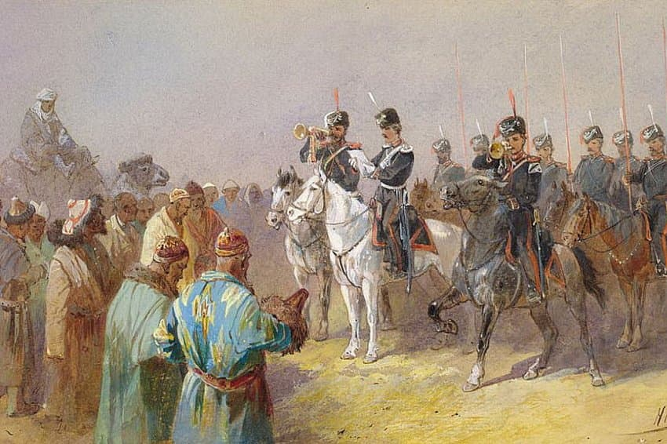
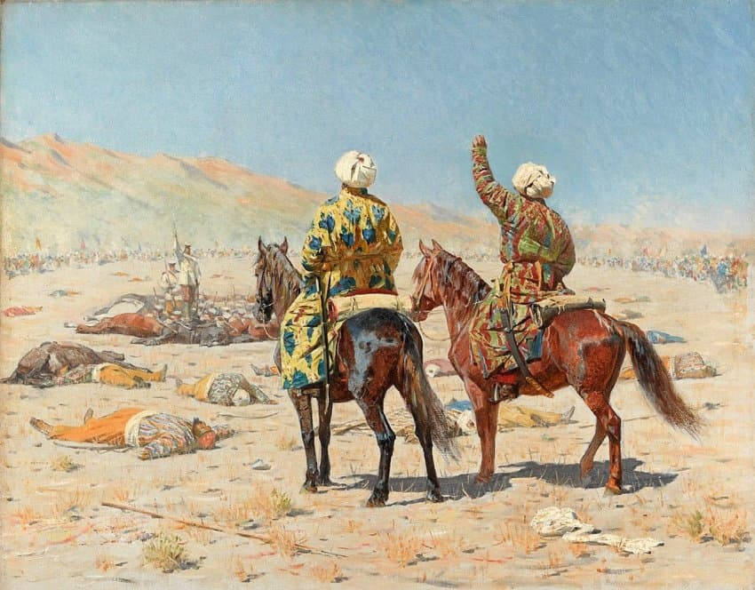
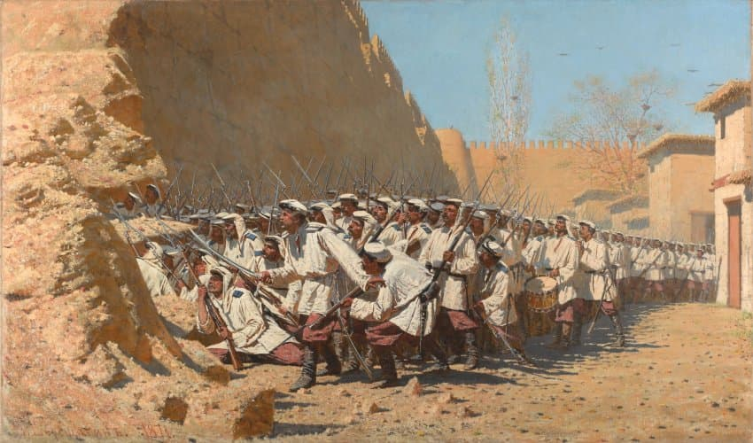
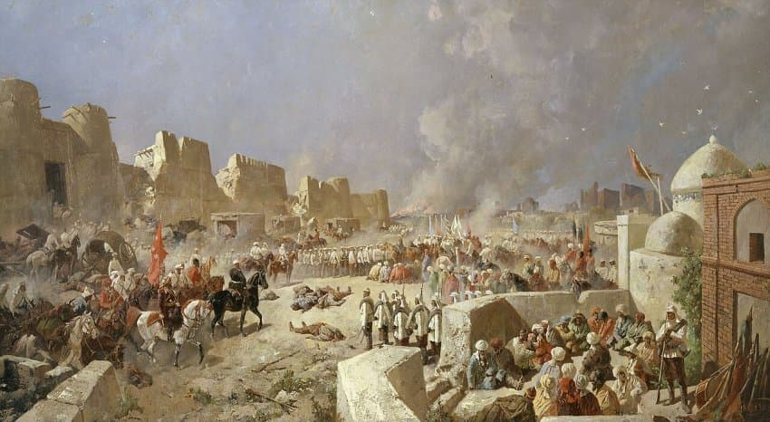
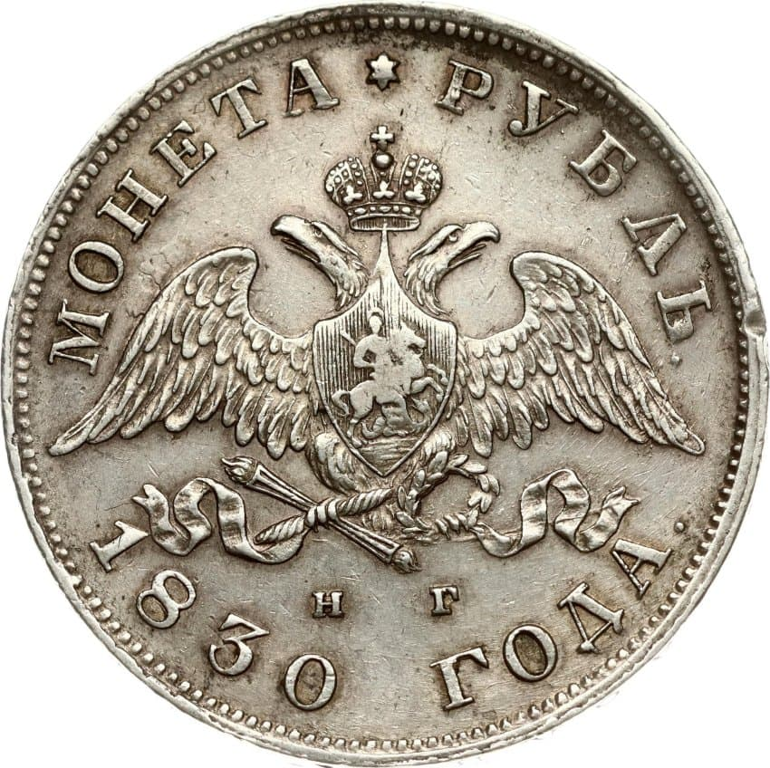
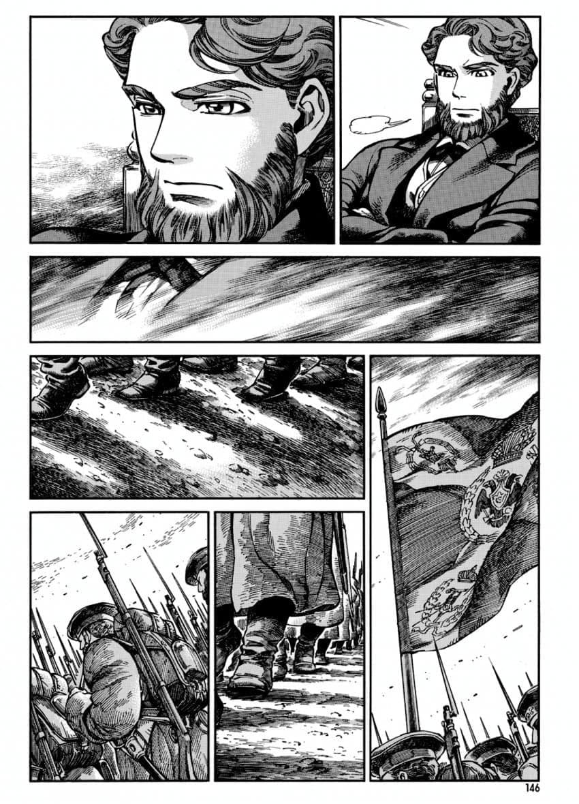
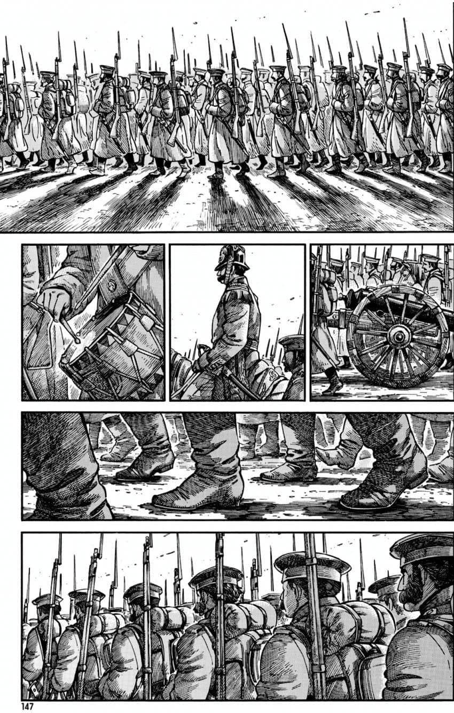
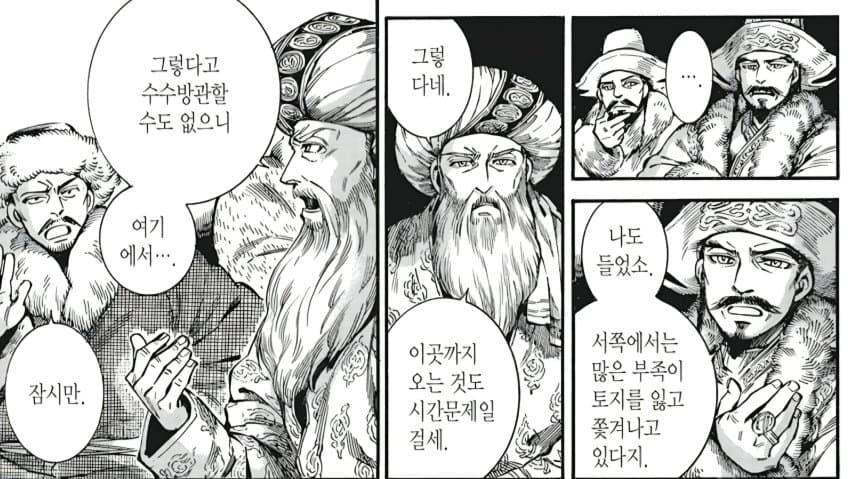
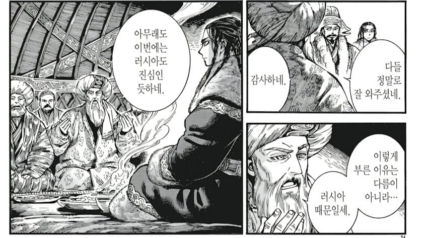

겨울 야영지, 풀 먹이는 목초지, 부족들이 모일만한 잠재적 집결지를 파악한 후 수십 명들이 주둔하는 목조 요새를 수십km 간격으로 도배한다.
유목민 입장에선 저런 수십~수백명 정도 주둔하는 목조요새를 박살내기 위해 병력을 쓰면 재산도 거덜나 집안이 망하지만 근대 국가 러시아에게 요새는 소모품이었다.

요새에 시장을 열고 수입품들을 팔고 유목민들에게 말들을 사들인다.
분열된 부족들을 부추겨 차르에게 충성을 맹세하라고 꼬드기는 동시에 복종한 부족장들에게는 자치를 허가한다.

요새는 늘어나고 교역은 장려되니, 어느 순간 러시아 제국의 영향력은 수십년 동안 중앙아시아에서 엄청나게 커졌다.
조용히 지켜만보던 차르의 쌍두 독수리는 이제 부족장들의 승계에 슬쩍 슬쩍 '조언'을 하기 시작한다.


19세기 초엽, 러시아는 정주민들... 그러니까 러시아 농민들을 강제로 동원해 정착시키기 시작했고
초원의 법률을 무시하며 쌍두 독수리의 법률과 세금 정책, 종교를 강요하기 시작한다.

인내심 있게 접근한 러시아 제국은 성공을 거뒀다.
요새도 러시아
법원도 러시아
토지 문서도 러시아
무역 통제권도 러시아
유목 이동 경로까지 러시아가 통제했던 것이다.
러시아는 유목민에게 없는 행정력과 행정기관으로 150년 동안 초원을 잠식했고, 뒤늦게 알아채린 중앙아시아 유목민들은 제국에 맞서 격렬하게 저항하기 시작한다.




본편 68화에서 차르의 군대가 군홧발을 울리며 초원을 향해 전진하기 시작한다.
쌍두 독수리가 꺾인 후에는 볼셰비키에게 고초를 겪게될 것이다.
만화 속 유목민들은 지혜와 힘을 모아 단결하여 저항하지만 어두운 미래가 그들을 기다리고 있다...

댓글
수집 당시 댓글 90개
DUWANG · 11.06 18:50:56
· 수류탄이야 · 11.06 18:59:36
· 씹덕1009일차 · 11.08 09:12:40
· ㅇㅇ · 11.08 12:29:43
ㅇㅇ · 11.06 18:52:18
· 수류탄이야 · 11.06 18:59:49
러지 · 11.06 18:54:17
· 수류탄이야 · 11.06 19:00:10
· ㅇㅇ · 11.08 09:20:29
· 오호통재라 · 11.08 10:36:58
· 천년군주 · 11.08 11:45:50
· ㅇㅇ · 11.08 12:43:16
· ㅇㅇ · 11.08 14:15:02
· ㅇㅇ · 11.08 18:18:06
고등어춉 · 11.06 18:55:29
· 수류탄이야 · 11.06 19:00:16
· 고등어춉 · 11.06 19:03:43
· 씹덕1009일차 · 11.08 09:12:56
프라텔로 · 11.06 18:59:01
· 수류탄이야 · 11.06 19:00:26
· 씹덕1009일차 · 11.08 09:13:24
· ㅇㅇ · 11.08 12:30:44
땨뗘(봇) · 11.08 09:10:07
메챠코 · 11.08 09:10:25
· 씹덕1009일차 · 11.08 09:13:36
· ㅇㅇ · 11.08 11:12:30
· ㅇㅇ · 11.08 11:12:34
씹덕1009일차 · 11.08 09:13:43
· 메챠코 · 11.08 09:14:01
· ㅇㅇ · 11.08 11:12:20
· ㅇㅇ · 11.08 12:31:00
ㅇㅇ · 11.08 09:19:41
프라이데이나이트펑킨아시는구나 · 11.08 09:22:40
· ㅇㅇ · 11.08 12:31:20
ㅇㅇ · 11.08 09:29:54
ㅇㅇ · 11.08 09:35:57
· ㅇㅇ · 11.08 09:38:57
· ㅇㅇ · 11.08 09:48:41
· ㅇㅇ · 11.08 09:49:51
· ㅇㅇ · 11.08 17:32:54
ㅇㅇ · 11.08 09:38:58
ㅇㅇ · 11.08 09:39:54
· ㅇㅇ · 11.08 10:46:08
· ㅇㅇ · 11.08 10:46:19
ㅇㅇ · 11.08 09:43:30
ㅇㅇ · 11.08 09:58:53
ㅇㅇ · 11.08 10:04:33
니카 · 11.08 10:15:38
다크레이디 · 11.08 10:26:51
o o · 11.08 10:55:24
o o · 11.08 10:55:30
· o o · 11.08 12:55:05
· o o · 11.08 12:55:12
· o o · 11.08 12:55:19
· o o · 11.08 12:55:24
o o · 11.08 10:55:35
ㅇㅇ · 11.08 11:11:13
· ㅇㅇ · 11.08 12:31:41
· ㅇㅇ · 11.08 13:09:39
· ㅂㄷ · 11.08 17:39:14
ㅇㅇ · 11.08 11:12:25
펜도르 · 11.08 11:25:37
· ㅇㅇ · 11.08 11:56:29
· ㅇㅇ · 11.08 13:45:16
ㅇㅇ · 11.08 11:43:11
ㅇㅇ · 11.08 11:54:50
· ㅇㅇ · 11.08 12:39:09
· ㅇㅇ · 11.08 12:39:30
· ㅇㅇ · 11.08 13:07:18
· ㅇㅇ · 11.08 14:51:26
· ㅂㄷ · 11.08 17:38:50
· ㅇㅇ · 11.08 18:20:05
딸기장사 · 11.08 12:12:38
ㅇㅇ · 11.08 12:17:37
· ㅇㅇ · 11.08 12:20:46
· ㅇㅇㄴㄴ · 11.08 13:02:56
ㅇㅇ · 11.08 12:34:28
· ㅇㅇ · 11.08 13:21:28
· ㅇㅇ · 11.08 13:29:44
ㅇㅇ · 11.08 13:06:49
ㅇㅇ · 11.08 13:29:20
ㅇㅇ · 11.08 13:50:08
ccc · 11.08 14:07:02
JungNu · 11.08 14:22:02
ㅇㅇ · 11.08 15:15:44
· 소설쟁이 · 11.08 16:15:06
ㅇㅇ · 11.08 16:09:01
ㅇㅇ · 11.08 16:32:35
ㅇㅇ · 11.08 17:44:52
ㅇㅇ · 11.08 18:26:27